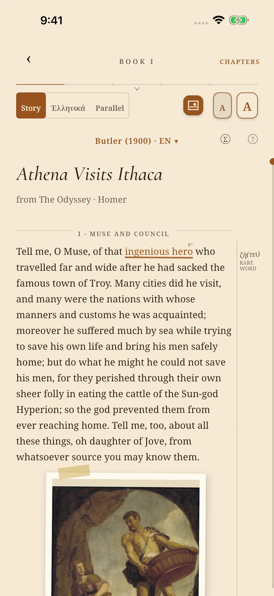
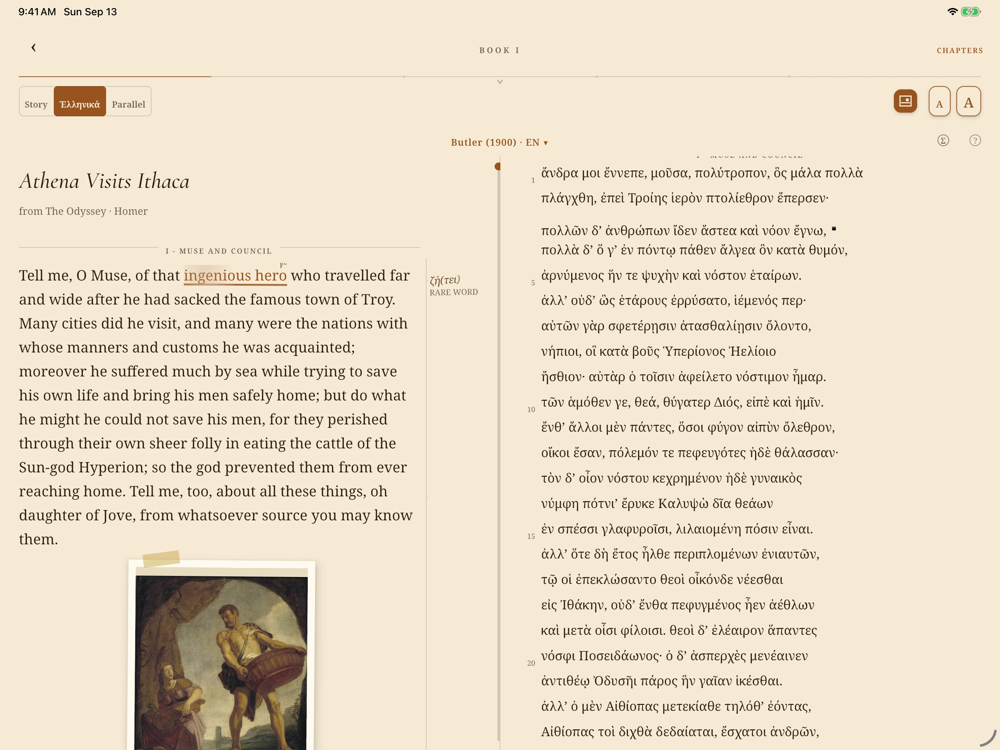
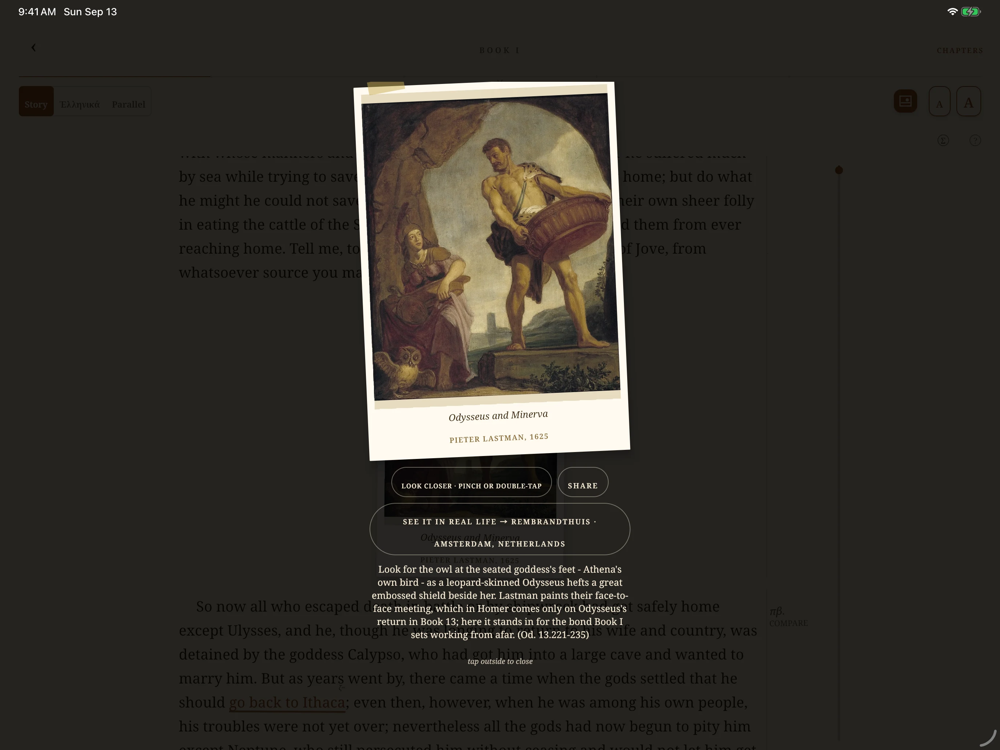

Illustrated edition
Folio Society
Emily Wilson
- Translation
- 1
- Illustrations
- 8
- Colored maps
- 8
Read it. Compare it. Follow it further.
Read all 24 books, catch up on any book in one minute, pair the Greek with nine historical translations, open the art where it meets the text, and turn the museum trail into a real visit.
The reading library lives on your device—ready even in airplane mode.
$9.99 one time at launch No subscription

Six ways in
The complete journey across all 24 books.
Get the shape of a book in one minute; add detail at five or twenty.
Keep the Greek beside a retelling or historical translation and switch without losing your place.
Open art where it enters the poem and follow its provenance.
Open the share sheet with an art image, its story context, and a catalog link when available.
Browse 152 catalogued works across 47 institutions and plan what to see.
Books we admire
A beautiful edition is worth owning. Skald serves a different role: it keeps the text, Greek, art, maps, and museum trail connected while you read.
Illustrated edition
Facing-page edition
Graphic reinterpretation
Connected, on-device edition
A printed edition makes its choices once. Skald lets you switch, align, highlight, map, open, and share—without leaving your place.
Beyond fixed facing pages
A printed Greek-English edition can pair the Greek with one English translation. In Greek view, Skald lets you change between a retelling and any of nine historical editions while the panes track the corresponding passage.
Tap a passage in a full translation to highlight its mapped Greek lines, or tap a Greek word for the on-device dictionary.

Ready for airplane mode
All 24 books, three retelling lengths, nine historical translations, the original Greek and dictionary, art, maps, museum guide, and your saved place are installed with Skald.
From takeoff to landing, no connection is needed to read or explore.
Opening external catalog or reference pages—or completing a share through an online service—requires connectivity. Disclosed analytics and diagnostics transmit when connectivity is available, but never gate reading.
See it in real life
Browse works shaped by the Odyssey, see where they are held, and use the in-app snapshot to plan what might be on view.
When connected, check the linked institution or reference page before visiting—or share an art card onward.
26 marked on view in the July 2026 snapshot.

Skald: Odyssey for Android
Nine translations. Three reading lengths. Art, Greek, maps, and museums. One device.
Join the Android beta$9.99 one time at launch No subscription